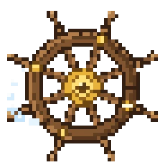

Glowing caves, reborn dimensions, open seas that carry warships.

An obsidian frame (4×5), lit with flint and steel. Enriched by BetterNether: new biomes and structures.
There you will forge netherite and the materials of the fire lords.
Activate the frames with eyes of ender, in a stronghold.
Expanded by BetterEnd: chorus forests, lakes, End villages. The lair of dragons and final legends.
Mine Cells opens a rogue-lite dimension (inspired by Dead Cells).
Descent: Prisoners' Quarters → Promenade → Ramparts → Crypt → Black Bridge. On death you restart, but the Cell Crafter makes you stronger. Two bosses: the Concierge and the Conjunctivius.
Six underground Overworld worlds to dig into:
Magnetic, Primordial, Toxic, Abyssal Chasm, Forlorn Hollows, Candy Cavity.
Each has its resources, elites and titan.
L_Ender's Cataclysm places the most dangerous dungeons in the world. Each guards a major boss and a unique trophy.
Locate them with a craftable Eye — see the Acts.
Goblins camp everywhere, noisily. Most are hostile, some will trade.
The Merchant trades for red mushrooms. Wear fake goblin ears to trade instead of being attacked.
The Blacksmith Goblin stands in the forge of the camp.
He forges the Goblin Ingot: 1 gold ingot + 1 netherite scrap + 1 engineer scrap. This ingot unlocks the camp's advanced recipes.